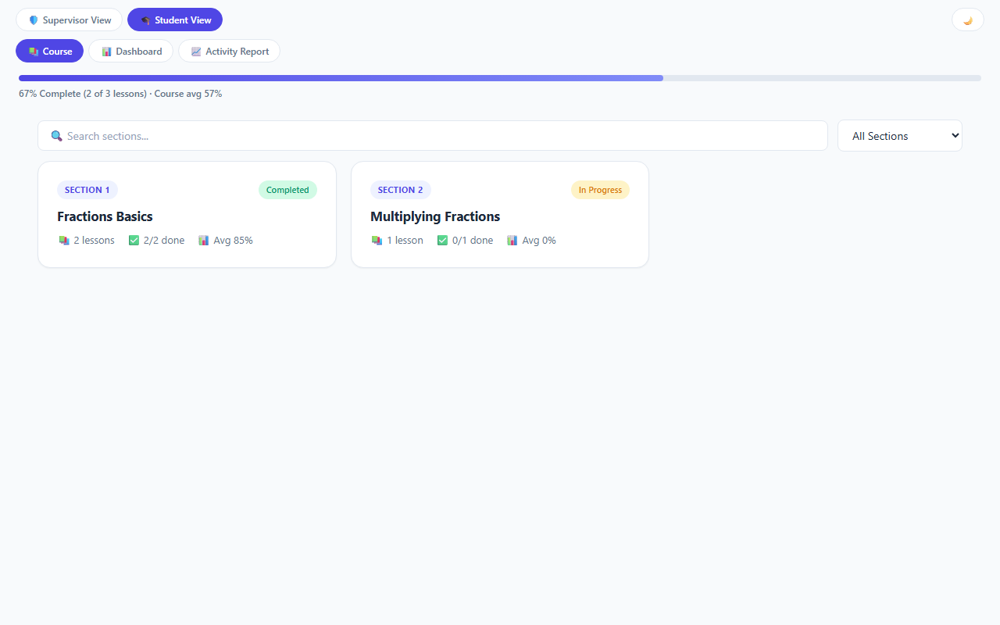
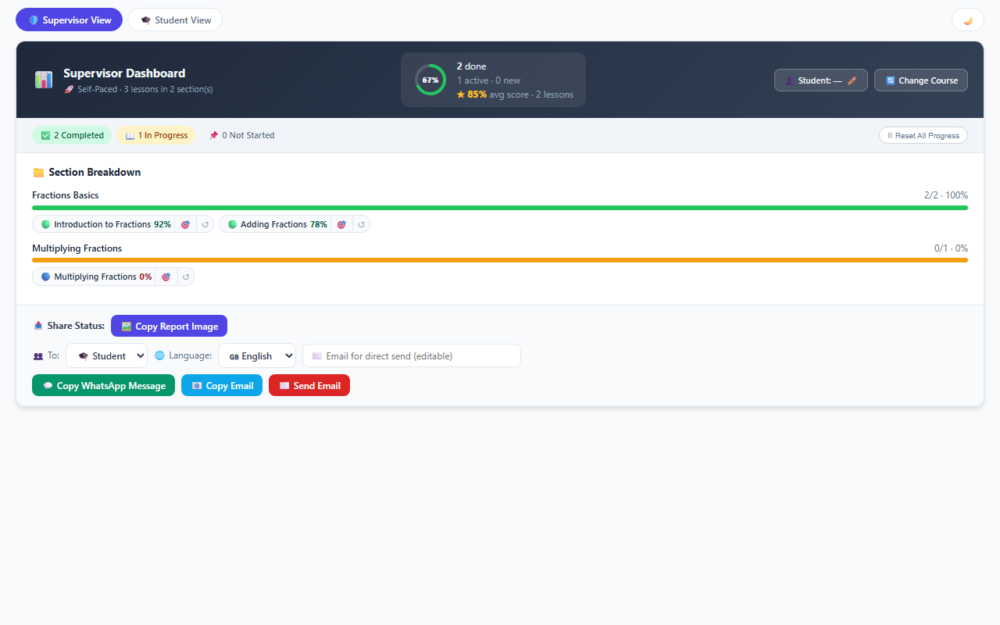
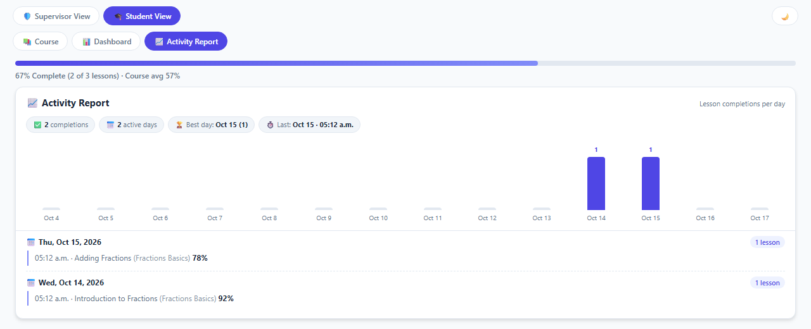
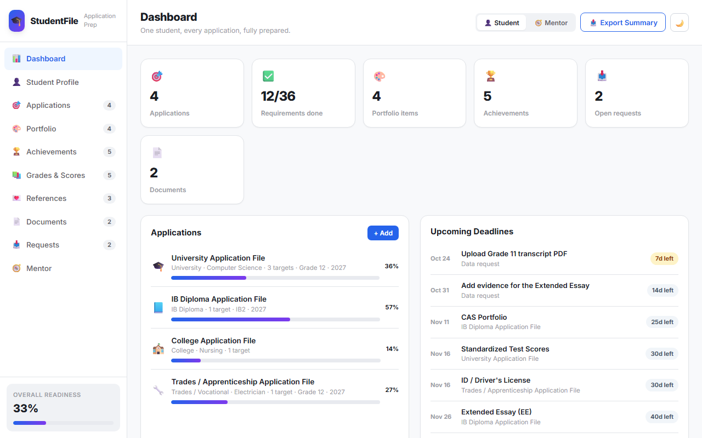
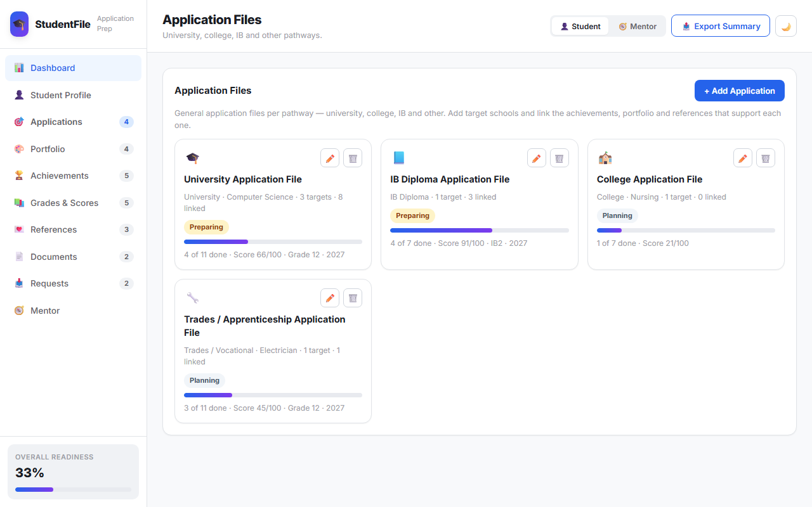
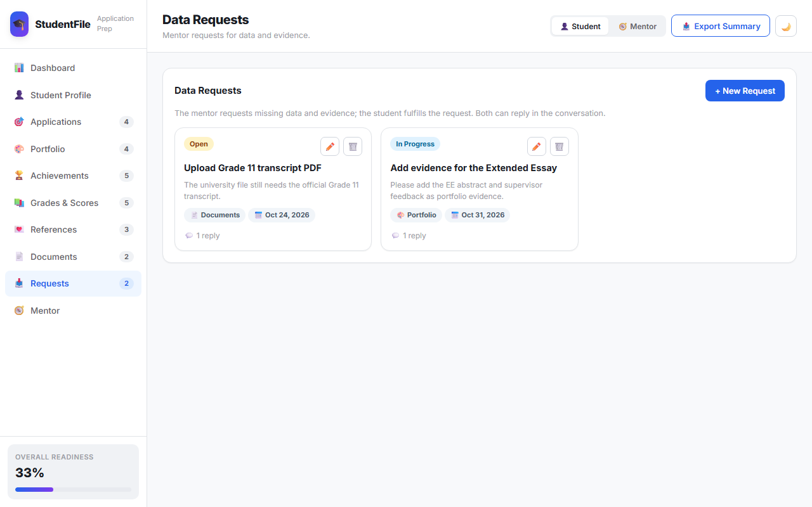
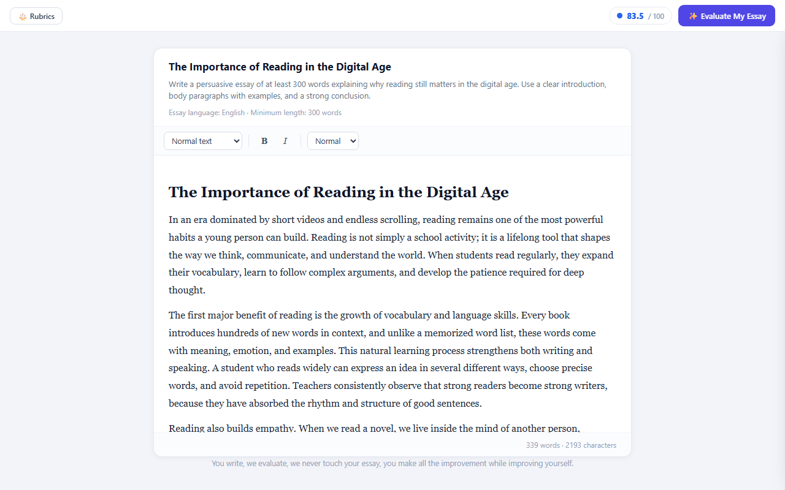
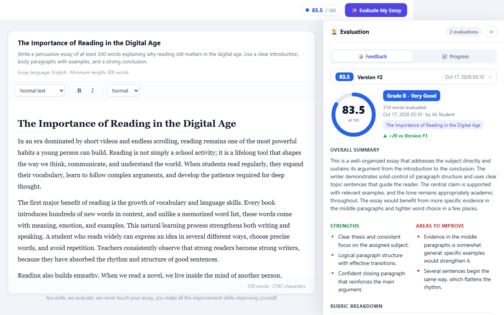

The free programmes families already know, and three new services built on tools made for this platform.
Everything below is open to families in the community today.
Weekly public maths lessons for grades 4-12, taught online by volunteer mentors.
A free in-person mock exam with results, so students practise under real conditions.
Scholarship and parent seminars, online, with practical next steps.
Updates, encouragement, and a place to ask questions between lessons.
Ten roles that run the programme, with training before a volunteer starts.
Registration for events, shared by direct link, with on-screen confirmation.
All free. No price is published anywhere on the website.
Some families need a path, a file and practice that fits one student. That is the gap.
A student moves section by section, and the supervisor sees real progress instead of guessing.
One file holds grades, achievements, references and deadlines, and a mentor works from it.
A student writes, gets scored on a clear rubric, and improves without anyone rewriting the work.
Same families, same team - three new structured services that do not replace the free programmes.
A curriculum becomes a personal path: sections unlock in order, quizzes check understanding, and progress is visible.
One file per student, with a mentor: applications, portfolio, references and deadlines in one place.
A focused writing surface with rubric-based evaluation and next steps - the essay is never edited for the student.
Built for the student who wants to move faster, catch up, or keep learning between live lessons.
The course content is authored once. Each student's record is separate, so changing the course never erases a student's progress.


Screens from the working build, with a sample student loaded. No spreadsheet sits behind this page - it reads the saved record.
The explanation, written for the level the student is actually at.
Scored answers with a pass score, attempts and score recovery.
Quick recall practice between lessons.
The same material as slides, for review before a quiz.
Read it or watch it - the material is available in more than one form.
Work a supervisor can approve in place, without email.
A lesson is not a page to read once. It is a set of steps with a score at the end.

The report is the same truth for everyone. Only the tone changes.
| Tool | Service | What it does |
|---|---|---|
| Curriculum Builder | Self-Paced Courses | Writes the course: sections, lessons, quizzes, flashcards and resources. |
| Self-Paced Education By Section | Self-Paced Courses | The student studies, the supervisor follows and approves; it owns the progress record. |
| Student File Builder For Applications | Student Files | One file per student: profile, applications, portfolio, grades, references and requests. |
| Essay Subject Builder | English Article Writing | The teacher defines the assignment, the word count and the rubrics. |
| Essay Writing Educator | English Article Writing | The student writes, gets scored against the rubric, and revises. |
Roles decide access: students write, mentors and supervisors review, teachers configure. Every service opens in the browser - nothing to install.

Built for families applying for the first time, who do not yet know what "ready" looks like.


The request is where coaching happens: what is missing, who adds it, and by when. The mentor view coaches; the student view does the work.
One focused writing surface for one essay, with rubric-based evaluation that never rewrites the student's work.
| Content & Ideas | 30 |
| Organization & Structure | 20 |
| Evidence & Argumentation | 20 |
| Language & Style | 15 |
| Grammar & Mechanics | 15 |
Five consistent criteria beat a vague "good essay" comment every time - and the score is feedback, not a replacement for the writing.


The essay is unchanged on both screens - the tool scores and explains, the student rewrites.
The journey is a menu, not a funnel. Families take the steps that fit their year.
Self-Paced Courses, Student Files and English Article Writing - each with a tool built for it, each tracked in the CMS.
Questions? Ask the programme teamNext: choose a first cohort for each new service, and name the mentor who owns each student file.